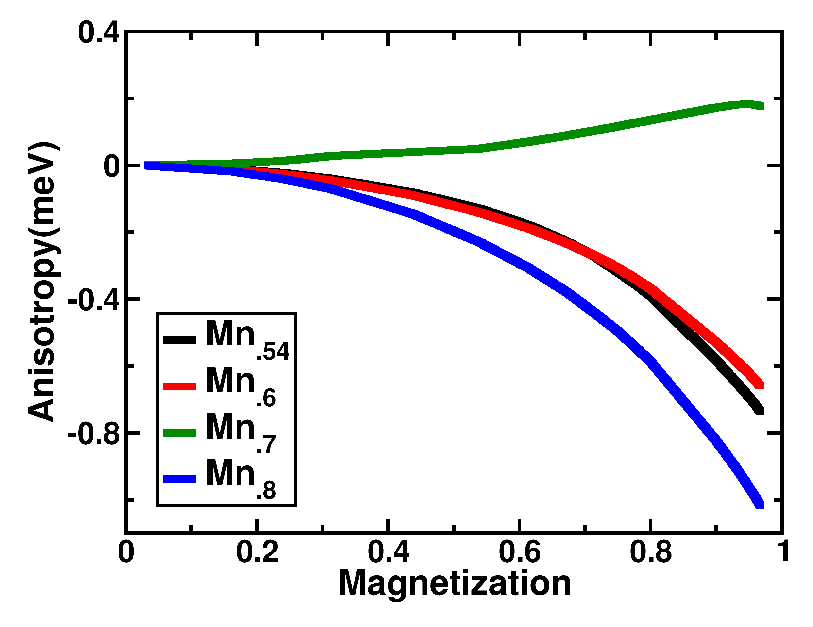

Research Interests
My primary research interest is study of magnetic and electronic properties of disordered systems from first principles
- Study of Magnetic Anisotropy from First Principles
-

The study of magnetic anisotropy energy (MAE), which is defined as tendency of magnetization to be aligned in a specific direction in permanent magnet is a very important field for last few decades. This is im- portant to realize coercivity, high remanence and a high energy product
- Inhomogeneous Surface
-
I have developed and maintain a kinetic monte carlo code for study the inter-layer diffusion of non-ideal surface